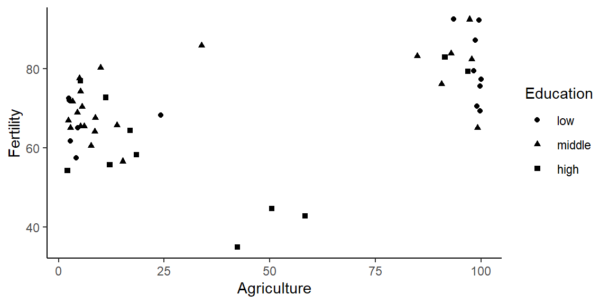

Writing a reproducible paper with RStudio and Quarto
![]()
1 Why reproducible research (in R)?
Some arguments…
Access: Research is normally funded by taxpayers (researchers are also taxpayers). Hence, it should be freely accessible to everyone without any barriers, e.g., without requiring commercial software. Importantly, researchers from developing countries are even more dependent on free access to knowledge (Kirsop and Chan 2005).
Reproducability: Even if you have written a study and analyzed the data yourself you will forget what you did after a few months. A fully reproducible setup will help you to trace back your own steps. Obviously, the same is true for other researchers who may want to understand your work and built on it. It may sound like a joke but why not aim for a document that can be used to reproduce your findings in 500 years.
Errors: Manual steps in data analysis (e.g., manually copy/pasting values into a table etc.) may introduce errors. Quarto allows you to automatize such steps and/or avoid them.
Revisions: Revising a paper takes much less time if you have all the code you need in one place, i.e., one
.qmdfile. For instance, if you decide to exclude a subset of your data you simply need to insert one line of your code at the beginning and everything is rebuilt/re-estimated automatically.
2 Why Quarto?
Quarto is an open-source, scientific and technical publishing system build on pandoc. Their creators from RStudio also call it „the next generation of R Markdown“.
Like RMarkdown, Quarto uses Knitr to execute R code, and is therefore able to render most existing .rmd files without having to make any adjustments. As in rmd and other more recent developments like R’s pagedown-package, one of the main goals of Quarto is to weave together narrative text and code and produce nicely formatted output documents.
Differences to RMarkdown are not only but especially due to two facts: first, Quarto is multi-lingual (R, Python, Julia, Observable JS, etc.) and second in addition to RMarkdown’s workflow where the final conversion layer uses pandoc to create documents, Quarto uses pandoc with Lua filters (which include latex in pandoc metadata). This contributes to cross-language standardization of outputs. Put differently, it allows working regardless of language, since it allows shared syntax and shared format across languages and input formats.
3 Prerequisites
Quarto is a multi-language, next-generation version of R Markdown from RStudio. Multi-language means you can use R, Python, Julia and other languages to create quarto documents. In this template we’ll focus on showing you how to use RStudio with Quarto.
To name prerequisites, we assume that you are familiar with using R and R Markdown. If you don’t know what R Markdown is there are many great resources that you can use (e.g. watch this short video). An older template of ours [see Bauer (2018); https://osf.io/q395s] may provide a quick entry point to writing a reproducible manuscript with R Markdown and Latex. To further deepen your understanding of the different components underlying this template, go on and learn about R, Markdown, R Markdown and Quarto. For Quarto also consider reading their FAQ.
Like R Markdown, Quarto uses Knitr to execute R code (hence you should also be able to render existing Rmd files without modification), and can render documents of a dozens of formats (e.g., PDF, HTML). For a comprehensive overview watch this video which is a record of a talk introducing quarto given by Tom Mock from RStudio.
Then…
- …install R and Rstudio (important: most recent versions, e.g. RStudio v2022.07) (R Core Team 2017; RStudio Team 2015).
- …install the “rmarkdown”-package from CRAN using the code below (Allaire et al. 2017).
```{r}
install.packages("rmarkdown")
```- …install tinytex, a lightweight version of Tex Live (Allaire et al. 2017; Xie 2018b) in order to compile PDFs.
```{r}
install.packages('tinytex')
tinytex::install_tinytex()
```- …also install the packages below using the code below (Arel-Bundock 2022; Hlavac 2013; Iannone, Cheng, and Schloerke 2022; Xie 2014, 2015, 2018a; Zhu 2017).
```{r}
install.packages(c("knitr", "kableExtra",
"stargazer", "modelsummary", "gt"))
```- …download the 3 input files we created —
paper.qmd,references.bibanddata.csv— from this folder. Ignore the other files. - …finally store all files from above together in one folder (and use this folder as your working directory later on).
4 Basics: Input files
All the input files you need to produce the present PDF file are:
paper.qmd(the underlying R Markdown file).references.bib(the bibliography).- We use paperpile to manage references and export the
.bibfile into the folder that contains the.qmdfile.
- We use paperpile to manage references and export the
data.csv(some raw data).
Download these files and save them into a folder. Close R/Rstudio and directly open paper.qmd with RStudio. Doing so assures that the working directory is set to the folder that contains paper.qmd and the other files.1
5 Basics: Output files and the YAML header
Quarto allows you to produce documents in various formats (e.g., HTML, PDF, MS Word). By default, once you render the paper.qmd file in Rstudio it creates an output file in HTML called paper.html. However in the YAML you can specify any alternative format (or formats) alongside different options.
Remember (see Section 3) that in order to compile PDFs you will need to install a recent distribution of LaTeX (e.g., TinyTex).
If you want your document to be rendered in multiple output formats (e.g., HTML and PDF like we did here), you need to specify both outputs in your YAML header. Take paper.qmd (the underlying quarto file of this pdf) and have a look at the YAML (line #14 - #16) to see how to specify different outputs.
For instructions on how to render your final output document, please read Section 12.
6 Referencing within your document
To see how referencing works simply see the different examples for figures, tables and sections below. For instance in Section 9 you can find different ways of referencing tables. paper.qmd (the underlying quarto file of this PDF) will show you how we referenced Section 9 right here namely with ‘@sec-tables’ whereas the corresponding section title was assigned the corresponding label ‘# Tables {#sec-tables}’. Pay attention that when using section cross-references, you need to enable the number-sections option in your YAML (line #22 of this qmd file).
7 Software versioning
Software changes and gets updated, especially with an active developer community like that of R. Luckily you can always access old versions of R and old version of R packages in the archive. In the archive you need to choose a particular package, e.g dplyr and search for the right version, e.g., dplyr_0.2.tar.gz. Then insert the path in the following function: install.packages("https://....../dplyr_0.2.tar.gz", repos=NULL, type="source"). Ideally, however, results will be simply reproducible in the most current R and package versions.
I would recommend to use the command below and simply add it to the appendix as we did here in Appendix Section 15.1. This will make sure you always inform the reader about the package versions your relied on in your paper. For more advanced tools see packrat.
```{r}
#|label: fig-versioning
cat(paste("#", capture.output(sessionInfo()), "\n", collapse =""))
# or use message() instead of cat()
```8 Data
8.1 Import
Generally, code is evaluated by inserting regular code chunks.
```{r}
x <- 1:10
x
``` [1] 1 2 3 4 5 6 7 8 9 10Below we import an exemplary dataset (you can find data.csv in the folder with the other files).
```{r}
|echo=T
|results="raw"
data <- read.csv("data.csv")
head(data)
``` Fertility Agriculture Examination Education Catholic Infant.Mortality
1 80.2 17.0 15 12 9.96 22.2
2 83.1 45.1 6 9 84.84 22.2
3 92.5 39.7 5 5 93.40 20.2
4 85.8 36.5 12 7 33.77 20.3
5 76.9 43.5 17 15 5.16 20.6
6 76.1 35.3 9 7 90.57 26.68.2 Putting your entire data into the .qmd file
Applying the function dput() to an object gives you the code needed to reproduce that object. So you could paste that code into your .qmd file if you don’t want to have extra data files. This makes sense were data files are small.
```{r}
dput(data[1:5,]) # here we only take a subset
```structure(list(Fertility = c(80.2, 83.1, 92.5, 85.8, 76.9), Agriculture = c(17,
45.1, 39.7, 36.5, 43.5), Examination = c(15L, 6L, 5L, 12L, 17L
), Education = c(12L, 9L, 5L, 7L, 15L), Catholic = c(9.96, 84.84,
93.4, 33.77, 5.16), Infant.Mortality = c(22.2, 22.2, 20.2, 20.3,
20.6)), row.names = c(NA, 5L), class = "data.frame")You can then insert the dput output in an rchunk in your .qmd as below.
```{r}
data <- structure(list(Fertility = c(80.2, 83.1, 92.5, 85.8, 76.9), Agriculture = c(17,
45.1, 39.7, 36.5, 43.5), Examination = c(15L, 6L, 5L, 12L, 17L
), Education = c(12L, 9L, 5L, 7L, 15L), Catholic = c(9.96, 84.84,
93.4, 33.77, 5.16), Infant.Mortality = c(22.2, 22.2, 20.2, 20.3,
20.6)), class = "data.frame", row.names = c(NA, -5L))
```9 Tables
If you are creating a Quarto document for scientific purposes, you probably cannot avoid creating tables and cross-referencing those tables in your document. Below we show examples that use different R libraries. Importantly, we focus on tables that are customized for PDF output. Formatting text as PDF is probably one of the most widespread standards in the scientific community, especially when it comes to submitting papers and similar documents. However, where applicable we also mention libraries and code for HTML output.
9.1 Tables with kable() and kable_styling()
A great function is kable() from the knitr package in combination with kableExtra. Table 1 provides such an example. To reference the table produced by the chunk you need to add #| label: tbl-x at the start of the chunk, i.e., #| label: tbl-1 so that you can reference it by adding “@tbl-1” in your text. See below for the full chunk code.
```{r}
#| label: tbl-1
#| tbl-cap: "Summary: Numeric variables"
library(knitr)
library(kableExtra)
knitr::kable(swiss[1:5,], row.names = TRUE,
caption = 'Table with kable() and kablestyling()',
booktabs = T, format="simple") %>%
kableExtra::kable_styling(full_width = T,
latex_options = c("striped",
"scale_down",
"HOLD_position"),
font_size = 11)
```| Fertility | Agriculture | Examination | Education | Catholic | Infant.Mortality | |
|---|---|---|---|---|---|---|
| Courtelary | 80.2 | 17.0 | 15 | 12 | 9.96 | 22.2 |
| Delemont | 83.1 | 45.1 | 6 | 9 | 84.84 | 22.2 |
| Franches-Mnt | 92.5 | 39.7 | 5 | 5 | 93.40 | 20.2 |
| Moutier | 85.8 | 36.5 | 12 | 7 | 33.77 | 20.3 |
| Neuveville | 76.9 | 43.5 | 17 | 15 | 5.16 | 20.6 |
9.2 Tables with modelsummary
If you want to create well-formatted HTML output, consider learning about the modelsummary R package. modelsummary provides a variety of tables and plots to summarize statistical models and data in R. modelsummary plots and tables are highly customizable and they can be saved to almost all formats, e.g., HTML, PDF and Markdown. This makes it especially easy to embed them in dynamic documents. Please look at the package’s extensive documentation where they also show examples for almost any plot or table you might be looking for. In this template we demonstrate an example for modelsummary’s datasummary function. Datasummary creates frequency tables, crosstab tables, correlation tables, balance tables and many more.
9.2.1 Summarize numeric variables with modelsummary
?@tbl-4 shows a summary table for numeric variables.
```{r}
#| label: tbl-4
#| tbl-cap: "Summary: Numeric variables"
library(modelsummary)
datasummary_skim(swiss,
type="numeric",
histogram=T,
title = "Summary: Numeric variables")
```9.2.2 Summarize categorical variables with modelsummary
Table 2 shows a summary table for categorical variables.
```{r}
#| label: tbl-5
#| tbl-cap: "Summary: Categorical variables"
# Create categorical variables
swiss$Education_cat <- cut(swiss$Education,
breaks=c(-Inf, 6, 12, Inf),
labels=c("low","middle","high"))
swiss$Infant.Mortality_cat <- cut(swiss$Infant.Mortality,
breaks=c(-Inf, 18.15, 21.70, Inf),
labels=c("low","middle","high"))
library(flextable)
tab_cat <- datasummary_skim(swiss,
type="categorical",
output = 'flextable')
# additionally we want to change the font, fontsize and spacing
library("gdtools")
library(dplyr)
tab_cat <- tab_cat %>%
font(fontname="Times New Roman", part="header") %>%
font(fontname="Times New Roman", j=1:4) %>%
fontsize(size=12, part="header") %>%
fontsize(size=10, j=1:4) %>%
line_spacing(space = 0.3, part = "all")
tab_cat
```
|
| N | % |
Education_cat | low | 14 | 29.8 |
middle | 22 | 46.8 | |
high | 11 | 23.4 | |
Infant.Mortality_cat | low | 12 | 25.5 |
middle | 23 | 48.9 | |
high | 12 | 25.5 |
9.3 Regression Table with stargazer
?@tbl-6 shows the output for a regression table. Make sure you name all your models and explicitly refer to model names (M1, M2 etc.) in the text.
library(stargazer)
M1 <- lm(Fertility ~ Education + Agriculture, data = swiss)
M2 <- lm(Fertility ~ Education + Catholic, data = swiss)
M3 <- lm(Fertility ~ Education + Infant.Mortality + Agriculture, data = swiss)
stargazer(M1, M2, M3,
title = "Regression table with stargazer",
label="tab2",
table.placement = "H",
column.labels = c("M1", "M2", "M3"),
model.numbers = FALSE,
header=FALSE)9.4 Regression table with modelsummary
?@tbl-7 shows the output for a regression table. Make sure you name all the models you estimate (even if its 50) and explicitly refer to model names (M1, M2 etc.) in the text.
10 Inline code & results
Reproduction reaches new heights when you work with inline code. For instance, you can automatize the display of certain coefficients within the text. An example is to include estimates, e.g., the coefficient of dist of the model we ran above. `r round(coef(M1)[2], 2)``r 3 + 7`
Inline code/results that depend on earlier objects in your document will automatically be updated once you change those objects. For instance, imagine a reviewer asks you to omit certain observations from your sample. You can simply do so in the beginning of your code and push play subsequently.. at time you might have to set cache = FALSE at the beginning so that all the code chunks are rerun.
Researchers often avoid referring to results in-text etc. because you easily forget to change them when revising a manuscript. At the same it can make an article much more informative and easier to read, e.g., if you discuss a coefficient in the text you can directly show it in the section in which you discuss it. Inline code allows you to do just that. R Markdown allows you to that do so in a reproducible and automatized manner.
11 Graphs
11.1 R base graphs
A fully reproducible manuscript would create diagrams directly in the .qmd file and insert them in the appropriate place. It’s relatively simple to insert R base graphs as you can see in Figure 1.
```{r}
#| label: fig-1
#| fig-cap: "Scatterplot of Speed and Distance"
plot(swiss$Catholic, swiss$Fertility)
```
11.2 ggplot2 graphs
Below in Figure 2 we also show a example witrh R’s ggplot2 package.
```{r}
#| label: fig-2
#| fig-cap: "Miles per gallon according to the weight"
library(ggplot2)
plot <- ggplot(swiss, aes(x=Catholic, y=Fertility, shape=Education_cat)) +
geom_point() +
labs(x="Agriculture", y = "Fertility", shape="Education") +
theme_classic()
plot
```
12 Compiling the document
Eventually you have two options on how to render/compile/knit your document:
first, use the Render Button in R Studio. If you click it without using the drop down menu, by default it will create HTML since it is the first format listed in our YAML. Always remember to specify your desired output formats in your YAML (as described in Section 5) If you use the drop down menu of the “Render”-button, you can specify the desired output (e.g., HTML or PDF) but only if you specified it in your YAML.
second, if you are not using RStudio and/or you prefer to render from the R console, use the
quartopackage to render to all formats at the same time with thequarto_render()function:
```{r}
quarto::quarto_render()
```Beforehand don’t forget to install the quarto package (Allaire 2022):
```{r}
install.packages("quarto")
```Here you can also again specify the name of the resulting document as well as the desired output format(s):
```{r}
quarto::quarto_render(
"paper.qmd",
output_format = c("pdf", "html")
)
```Your output(s) will be saved in your working directory.
13 Good practices for reproducibility
Every researcher has his own optimized setup. Currently we would recommend the following:
- Keep all files of your project (that matter for producing the PDF) in one folder without subfolders. You can zip and directly upload that folder to the Harvard dataverse.2
- Make sure that filenames have a logic to them.
- Main file with text/code: “paper.qmd”, “report.qmd”
- Data files: “data_xxxxxx.*”
- Image files: “fig_xxxxxx.*”
- Tables files: “table_xxxx.*”
- etc.
- Ideally, your filenames will correspond to the names in the paper. For instance, Figure 1 in the paper may have a corresponding file called
fig_1_xxxxx.pdf.
- Use the document outline in R studio (Ctrl + Shift + O) when you work with R Markdown.
- Name rchunks according to what they do or produce:
- “
fig-...” for chunks producing figures - “
table-...” for chunks producing tables - “
model-...” for chunks producing model estimates - “
import-...” for chunks importing data - “
recoding-...” for chunks in which data is recoded
- “
- Use “really” informative variable names:
- Q: What do you think does the variable trstep measure? It actually measures trust in the European parliament.
- How could we call this variable instead? Yes,
trust.european.parliamentwhich is longer but will probably be understood by another researcher in 50 years.
- How could we call this variable instead? Yes,
- If your setup is truly reproducible you will probably re-use the variable names that you generate as variable names in the tables you produce. Hence, there is an incentive to use good names.
- Q: What do you think does the variable trstep measure? It actually measures trust in the European parliament.
- Use unique identifiers in the final R Markdown document paper.qmd that you upload:
- Think of someone who wants to produce Figure 1/Model 1/Table 1 in your paper but doesn’t find it in your code…
- Name the chunks “fig-1”, “fig-2” as the are named in the published paper.
- Name the chunks that produce tables “table-1”, “table-2” etc. as they are named in the published paper.
- Name your statistical models in your R code “M1”, “M2” as they are named in the published paper.
- Think of someone who wants to produce Figure 1/Model 1/Table 1 in your paper but doesn’t find it in your code…
14 Additional tricks for publishing
- Make your script anonymous
- Simply put a
<!-- ... -->around any identifying information, e.g., author names, title footnote etc.
- Simply put a
- Counting words
- Use adobe acrobat (commerical software) to convert your file to a word file. Then open in word and delete all the parts that shouldn’t go into the word count. The word count is displayed in the lower right.
- Use an one of the online services to count your words (search for “pdf word count”)
- Appendix: You can change the numbering format for the appendix in the rmd file
- What is still not possible in this document is to automatically have separate reference sections for paper and appendix.
- Journals may require you to use their tex style: Sometimes you can simply use their template in your rmarkdown file. See here for a PLOS one example.
15 Citation styles
If your study needs to follow a particular citation style, you can set the corresponding style in the header of your .qmd document. To do so you have to download the corresponding .csl file.
In the present document we use the style of the American Sociological Association and set it in the preamble with csl: american-sociological-association.csl. However, you also need to download the respective .csl file from the following github page: https://github.com/citation-style-language/styles and copy it into your working directory for it to work.
The github directory contains a wide variety of citation style files depending on what discipline you work in.
Also read quarto’s official documentation about Citations and Footnotes.
References
Online appendix
15.1 Attach R session info in appendix
Since R and R packages are constantly evolving you might want to add the R session info that contains information on the R version as well as the packages that are loaded.
R version 4.2.2 (2022-10-31)
Platform: aarch64-apple-darwin20 (64-bit)
Running under: macOS Ventura 13.0.1
Matrix products: default
BLAS: /Library/Frameworks/R.framework/Versions/4.2-arm64/Resources/lib/libRblas.0.dylib
LAPACK: /Library/Frameworks/R.framework/Versions/4.2-arm64/Resources/lib/libRlapack.dylib
attached base packages:
[1] stats graphics grDevices utils datasets methods base
other attached packages:
[1] ggplot2_3.3.6 stargazer_5.2.3 dplyr_1.0.9
[4] gdtools_0.2.4 modelsummary_0.11.1 flextable_0.7.2
[7] kableExtra_1.3.4 knitr_1.39
loaded via a namespace (and not attached):
[1] tidyselect_1.1.2 xfun_0.37 purrr_0.3.4 colorspace_2.0-3
[5] generics_0.1.2 vctrs_0.4.1 htmltools_0.5.2 viridisLite_0.4.0
[9] yaml_2.3.5 base64enc_0.1-3 utf8_1.2.2 rlang_1.0.6
[13] pillar_1.7.0 withr_2.5.0 DBI_1.1.2 glue_1.6.2
[17] uuid_1.1-0 lifecycle_1.0.1 stringr_1.4.0 gtable_0.3.0
[21] munsell_0.5.0 rvest_1.0.2 zip_2.2.0 htmlwidgets_1.5.4
[25] evaluate_0.15 labeling_0.4.2 fastmap_1.1.0 fansi_1.0.3
[29] highr_0.9 Rcpp_1.0.8.3 scales_1.2.0 backports_1.4.1
[33] checkmate_2.1.0 webshot_0.5.3 jsonlite_1.8.0 farver_2.1.0
[37] systemfonts_1.0.4 digest_0.6.29 stringi_1.7.6 insight_0.17.1
[41] grid_4.2.2 cli_3.3.0 tools_4.2.2 magrittr_2.0.3
[45] tibble_3.1.7 crayon_1.5.1 pkgconfig_2.0.3 ellipsis_0.3.2
[49] data.table_1.14.2 xml2_1.3.3 assertthat_0.2.1 rmarkdown_2.20
[53] svglite_2.1.0 httr_1.4.3 officer_0.4.3 rstudioapi_0.13
[57] R6_2.5.1 tables_0.9.6 compiler_4.2.2 15.2 All the code in the paper
To simply attach all the code you used in the PDF file in the appendix see the R chunk in the underlying .qmd file:
knitr::opts_chunk$set(cache = FALSE)
# Use cache = TRUE if you want to speed up compilation
knitr::opts_knit$set(output.format = "html") # Set to "html" for HTML output
# A function to allow for showing some of the inline code
rinline <- function(code){
html <- '<code class="r">``` `r CODE` ```</code>'
sub("CODE", code, html)
}
install.packages("rmarkdown")
install.packages('tinytex')
tinytex::install_tinytex()
install.packages(c("knitr", "kableExtra",
"stargazer", "modelsummary", "knitr", "gt"))
#|label: fig-versioning
cat(paste("#", capture.output(sessionInfo()), "\n", collapse =""))
# or use message() instead of cat()
x <- 1:10
x
data <- read.csv("data.csv")
head(data)
dput(data[1:5,]) # here we only take a subset
data <- structure(list(Fertility = c(80.2, 83.1, 92.5, 85.8, 76.9), Agriculture = c(17,
45.1, 39.7, 36.5, 43.5), Examination = c(15L, 6L, 5L, 12L, 17L
), Education = c(12L, 9L, 5L, 7L, 15L), Catholic = c(9.96, 84.84,
93.4, 33.77, 5.16), Infant.Mortality = c(22.2, 22.2, 20.2, 20.3,
20.6)), class = "data.frame", row.names = c(NA, -5L))
library(knitr)
library(kableExtra)
knitr::kable(swiss[1:5,], row.names = TRUE,
caption = 'Table with kable() and kablestyling()',
booktabs = T, format="simple") %>%
kableExtra::kable_styling(full_width = T,
latex_options = c("striped",
"scale_down",
"HOLD_position"),
font_size = 11)
library(stargazer)
stargazer(swiss,
title = "Summary table with stargazer",
label="tbl-2",
table.placement = "H",
type="latex",
header=FALSE)
library(modelsummary)
datasummary_skim(swiss,
type="numeric",
histogram=T,
output="default",
title = "Summary: Numeric variables")
# Create categorical variables
swiss$Education_cat <- cut(swiss$Education,
breaks=c(-Inf, 6, 12, Inf),
labels=c("low","middle","high"))
swiss$Infant.Mortality_cat <- cut(swiss$Infant.Mortality,
breaks=c(-Inf, 18.15, 21.70, Inf),
labels=c("low","middle","high"))
library(flextable)
library(modelsummary)
tab_cat <- datasummary_skim(swiss,
type="categorical",
output = 'flextable')
# additionally we want to change the font, fontsize and spacing
library("gdtools")
library(dplyr)
tab_cat <- tab_cat %>%
font(fontname="Times New Roman", part="header") %>%
font(fontname="Times New Roman", j=1:4) %>%
fontsize(size=12, part="header") %>%
fontsize(size=10, j=1:4) %>%
line_spacing(space = 0.3, part = "all")
tab_cat
library(stargazer)
M1 <- lm(Fertility ~ Education + Agriculture, data = swiss)
M2 <- lm(Fertility ~ Education + Catholic, data = swiss)
M3 <- lm(Fertility ~ Education + Infant.Mortality + Agriculture, data = swiss)
stargazer(M1, M2, M3,
title = "Regression table with stargazer",
label="tab2",
table.placement = "H",
column.labels = c("M1", "M2", "M3"),
model.numbers = FALSE,
header=FALSE)
library(modelsummary)
M1 <- lm(Fertility ~ Education + Agriculture, data = swiss)
M2 <- lm(Fertility ~ Education + Catholic, data = swiss)
M3 <- lm(Fertility ~ Education + Infant.Mortality + Agriculture, data = swiss)
models <- list("M1" = M1, "M2" = M2, "M3" = M3)
library(gt)
# additionally we want to change the font, font size and spacing
modelsummary(models,
output = 'gt',
notes = "Notes: some notes...") %>%
tab_spanner(label = 'Dependent variable: Fertility', columns = 2:4) %>%
tab_options(
table.font.size = 10,
data_row.padding = px(1),
table.border.top.color = "white",
heading.border.bottom.color = "black",
row_group.border.top.color = "black",
row_group.border.bottom.color = "white",
table.border.bottom.color = "white",
column_labels.border.top.color = "black",
column_labels.border.bottom.color = "black",
table_body.border.bottom.color = "black",
table_body.hlines.color = "white"
)
plot(swiss$Catholic, swiss$Fertility)
library(ggplot2)
plot <- ggplot(swiss, aes(x=Catholic, y=Fertility, shape=Education_cat)) +
geom_point() +
labs(x="Agriculture", y = "Fertility", shape="Education") +
theme_classic()
plot
quarto::quarto_render()
install.packages("quarto")
quarto::quarto_render(
"paper.qmd",
output_format = c("pdf", "html")
)
print(sessionInfo(), local = FALSE)Footnotes
You can always check your working directory in R with
getwd().↩︎Another good folder setup would be to store all files needed as input files for the R Markdown manuscript in a subfolder called “input” and all output files that are produced apart from paper.html and paper.pdf in a subfolder called “output”.↩︎